Digital Down-Conversion and Decimation in the ATE World
Edwin Lowery, Verigy
Joe Kelly, Verigy
Paper ID: 107184
Abstract
Complex hardware design and the transfer of large amounts of data in RF ATE (Automated Test Equipment) systems can make or break the overall cost-of-test (COT) using most common models.
By using hardware design technology found in modern software-defined radios to perform digital down-conversion, it's possible to eliminate some of the specialized hardware in RF test systems, leading to improved performance and lower cost test systems.
Understanding the science of sampling, digital filtering and flatness correction can greatly reduce the burden of data management on the test engineer. When paired with decimation techniques, the number of data points to be analyzed, either with hardware DSP (Digital Signal Processing) or on the ATE CPU, can be tremendously reduced.
This paper will explain the science, architecture and time saving techniques involved in using DSP algorithms for signal analysis in modern ATE systems.
Introduction
ATE Architecture
Figure 1 shows the typical ATE architecture for testing RF devices. The RF signal comes into the tester from the DUT (Device Under Test) and the signal is downconverted to some IF or baseband frequency, depending on the ATE downconversion architecture (super heterodyne or direct conversion). Because the incoming RF signal is a physical analog signal, all of the pieces in the dotted box of the ATE that manipulate the signal to this point are hardware-based.
The ADC (often called digitizer) converts the signal from analog to digital and places it into a discrete format in the form of arrays of data in the system. Since the data has become digital at this point, performing manipulations on the captured data can prove quite useful and inexpensive.
Digital Signal Processing in ATE
For data processing in the ATE environment, there are several goals that must be met simultaneously. It is crucial that any operations performed on the captured arrays:
Maintain the integrity of the signal
Minimize noise introduced into the signal by the ATE
Obtain the best dynamic range possible for the digitizer
Reduce the data load by moving the smallest number of data points possible
Ensure fast test times
Each of these items will be addressed in the following sections.
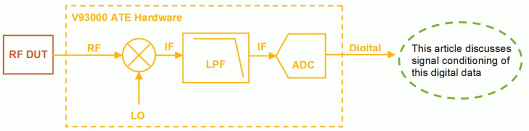
Measurement of Interest
For this article, the primary measurement that will be performed on the DUT is a signal-to-noise-ratio measurement on a DUT output.
Signal-to-Noise Ratio
SNR (Signal-to-Noise Ratio) is a measure of the quality of the signal of the DUT. As with any measurement it is important to ensure that the noise floor of the tester is lower than that of the signal being tested. The SNR of the DUT is measured to quantify sensitivity of the DUT. From an RF point-of-view SNR is related to the noise figure of the DUT.
The SNR of the ATE digitizer must be considered in addition to the DUT. The theoretical SNR for an N-bit digitizer is,
SNR|dB = 6.02N + 1.76, (1)
Where N is the number of bits. This value is theoretically the best that can be obtained from an N-bit digitizer. Impairments such as quantization noise are not considered in this calculation. This means, for example, that for a 10-bit digitizer, the SNR would be 61.78dB.
It would seem that the DUT test would be limited to the theoretical SNR of the digitizer based on the number of bits available. However, this article will demonstrate the techniques to in fact improve the SNR beyond the native number of digitizer bits.
Signal Conditioning
The following sections describe signal conditioning techniques that can be used to achieve the aforementioned goals in an ATE environment. The signal conditioning techniques are:
Oversampling
Digital downconverting
Digital filtering
Decimation
A fictitious 10-bit digitizer capturing a two-tone signal from a fictitious DUT within Matlab simulations will be used as a basis for the following discussion. The two-tone signal exhibits a wide dynamic range between the two tones. The signal is shown in Figures 2a and 2b, having Tone 1 at 256Hz and 0dBm and Tone 2 at 259Hz and -70dBm. The 10-bit digitizer operating with a sampling rate of 1024Hz captures 1024 samples.
Figure 2a shows a 512Hz bandwidth exhibiting a 61.8dB SNR. This is in line with the theoretical SNR calculation. It is important to note that only Tone 1 is discernable because of the close proximity to Tone 2 and the high noise floor.
By reducing the frequency span (Figure 2b) and therefore the number of frequency bins, the noise floor is reduced and Tone 2 is now clearly observable. Summing up fewer bins (only 100 in this case) reduces the noise floor and the SNR is now 69.4dB.
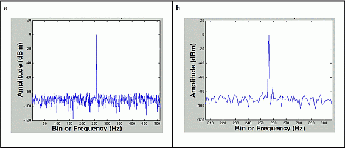
Oversampling
Although oversampling is a set-up parameter of the digitizer capture and not a post-processing action, it is important in the actions that follow the analog-to-digital conversion stage. Oversampling improves the dynamic range of the digitized capture by reducing the noise power per frequency bin. This is achieved as the bin spacing ends up being smaller (less integrated noise power). Notice the plots of Figure 3. As the number of samples is increased from 4096 to 16384 (four times), the noise floor is reduced by roughly 6dB. Again, in both cases the noise over 100 bins is being summed. However, for 4096 points, this means that a 25 Hz bandwidth is being considered. For 16384 points, only 6.25 Hz are being considered. This principle is quite useful, however the only concern, especially in production testing, is that the data size can get too large and cause increased test time.
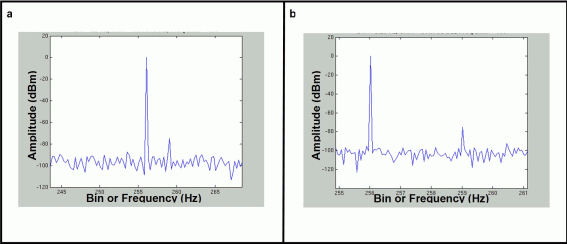
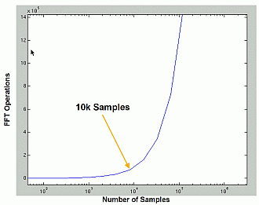
If the number of samples grows unbounded, test time suffers greatly. Figure 4 shows the number of mathematical operations required for an FFT of a given sample size. It is important to note there is a knee at approximately 10k points for FFTs. This is because there is a logarithmic relationship between the number of FFT operations and the number of data points. The relationship is,
NFFT operations = nlog2(n) (2)
where n is the number of captured samples to be processed. It becomes apparent from this plot that it is impractical to use extremely large sampled arrays for analysis of DUT performance. There is a practical limit to how many samples can be taken and processed. Some methodology must be used to reduce the number of points taken.
Decimation
It is possible to reduce the number of points in the array by decimating, or throwing away points. Throwing away points effectively reduces the sampling rate. Decimation is also sometimes referred to as downsampling. The prefix deci implies factor or power of 10, but decimation can actually be performed by any integer factor.
Figure 5 shows how a sampled waveform is decimated in the time domain. Consider that the waveform as-received, with 16384 points, is as in Figure 5a. After decimating by a factor of 4, it appears as in Figure 5b. Consequently, the number of samples per cycle has been reduced from 16 to 4.
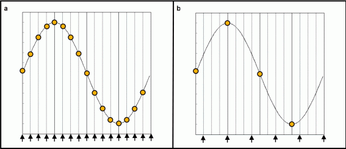
One of the artifacts that must be considered with decimation is aliasing. This impacts the post-decimated spectrum in two significant ways. First, tones in the high end of the original spectrum are aliased to the low end of the resultant spectrum. If not aware of these, or if they are not filtered out prior to decimating, they can be problematic in the ensuing calculations and give incorrect results.
Another artifact that is the same mechanism, but slightly different appearance, is that the noise in the upper bins of the spectrum gets aliased on to the lower end of the spectrum upon decimating. This raises the noise floor of the resultant spectrum, and hence, decreases the SNR of the capture.
For example, a captured data array with desired tone at 0dBm in bin 100, as shown in Figure 6a, has a 60dBm spur at 415Hz. Upon decimating this array, this spur is aliased down to the lower side of 100Hz (note the presence of the new -60dBm spur in figure 6b). This is a false result as there is no tone below 100Hz coming from the DUT.
In summary, decimation is essentially the act of removing higher-order frequency bins to reduce the number of samples and the work load on the processor, thereby reducing test time and increasing throughput. The amount of the spectrum that can be decimated is limited by the location of the frequency of the signal of interest and the bandwidth surrounding it. Having a test frequency at a relatively high frequency bin would be difficult to decimate. If the signal of interest could be frequency-translated down to 0Hz, then the maximum decimation allowable could occur.
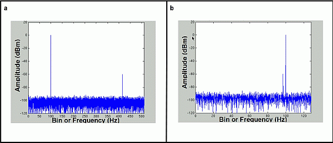
Digital Downconversion
For reasons that will become apparent during the discussion on decimation, it can be advantageous to downconvert, or frequency-translate, the captured data array. This is a software, or digital downconversion. It is achieved by multiplying the data array by a complex frequency. This has the same effect as using a local oscillator on an analog signal.
By performing digital downconversion, the spectrum shifts down toward 0Hz by the value of the complex frequency. For example, Figure 7 shows a signal being digitally downconverted from 100 Hz to 0 Hz by mixing with a complex frequency with magnitude 100 Hz. In doing this, the information that was originally below 100 Hz (boxed in area) has moved to the high end of the digitally downconverted spectrum. Resulting from this, the information for frequencies that were originally less than 100 Hz, is no longer available at their correct relative positions (Figure 8).
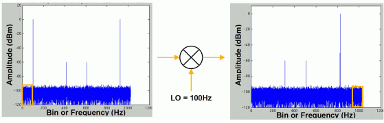
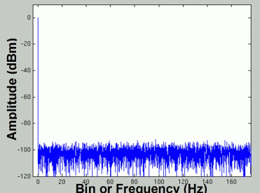
An Alternative Approach to Viewing the Spectrum
Figure 9a shows the digitally downconverted spectrum from Figure 7, but in a slightly different way. In the downconverted spectrum of Figure 7, the signals that were originally between DC and 100Hz are moved to the highest end of the spectrum. In this alternative approach in Figure 9, we dip into a negative frequency numbering scheme and unwrap the high end of the spectrum, to maintain the relative positions of the original captured signal. With 0Hz centered in the plot, the spectrum above and below the signal of interest is clearly visible. The zoom in plot of Figure 9b shows the original 100Hz tone, with +/- 50Hz of spectrum to the sides of it.
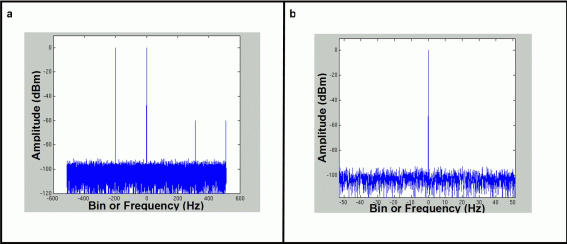
Digital Filtering
Once the signal has been digitally downconverted and centered at 0Hz, all that is left to do is clean up the aliased artifacts introduced by decimation. A suitable way to deal with this is to use low-pass digital filtering. Any type of filtering scheme can be used, but the key elements are to ensure that the position of the roll-off of the filter does not disturb the desired signal and its surrounding bandwidth of interest, and that it does significantly attenuate information in the stopband.
The choice of location of roll-off will also play a role in helping to determine how much decimation can be performed cleanly. The allowable decimation factors are shown in Figure 10. For this exercise the filter has been chosen such that aliasing components will be attenuated by > 100dB. With this filter, the attenuation in the stopband is great enough to ensure that decimation by a factor of either 2 or 4 will not introduce noise (via aliasing) back into the spectral area of interest (that within the passband). Although higher decimation factors are allowed, they jut into the passband of the filter, and their signal components will be aliased into the resultant spectrum.
Based on the choice of decimation by a factor of 4, using the filter of Figure 10, this means that 75% of the original points can be thrown away without significantly altering the desired spectrum.
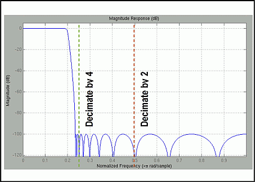
Example to Show Benefits of Digital Down-Conversion and Decimation
The individual pieces that have been discussed above will be brought together in this section to show what is possible.
The starting point is the captured array, consisting of 16384 samples. This is shown in Figure 11. The key signals of interest in this array are:
- Desired Tone 1 at 100Hz, 0dBm
- Desired Tone 2 at 103Hz, -60dBm
- Unwanted Spur at 415 -60dBm
- Image Tone 1 at 924 Hz
- Image Spur at 609 Hz.
The SNR of this data is 82.2dB over 100 frequency bins. Recall that the goal is to achieve a reduced data array with clear representation of the signal of interest while maintaining high dynamic range (or SNR) which will allow us to achieve the fastest test time performance.
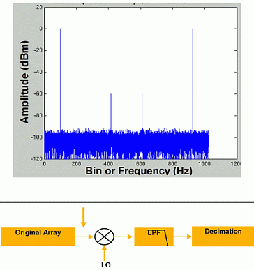
The first step is to frequency-translate the captured spectrum so that the signal of interest is now centered at 0 Hz (Figures 12a and 12b). This will be the new frequency reference from this point onward. Although the absolute frequency is lost, the relative frequency between all data elements is maintained and the appropriate absolute or relative power levels can still be calculated.
The number of points have not been changed and the SNR is still an excellent 81.4dB. The frequencies of our signals of interest have now moved as follows:
- Desired Tone 1 at 0Hz, 0dBm
- Desired Tone 2 at 3Hz, -60dBm
- Unwanted Spur at 315 -60dBm
- Image Tone 1 at -200 Hz
- Image Spur at 509 Hz
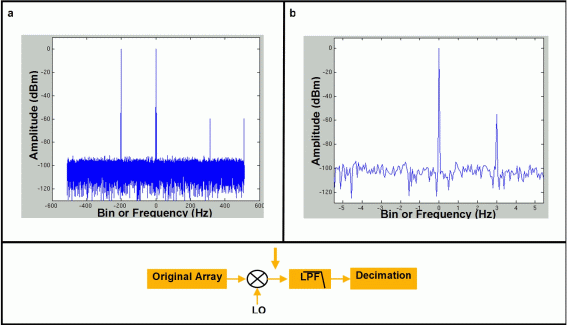
Next, the data array is run through a low pass filter that will allow decimation by 4. This filter is similar to that discussed in earlier sections. While the filter appears to eliminate the noise floor in the stop bands, keep in mind that it is merely attenuating the signal (albeit, quite significantly).
From this filter, the data points greater than 128Hz away from the center are greatly attenuated (Figure 13a). Most importantly, the unwanted spur at 315Hz is removed. The image tone at -200Hz is greatly attenuated and Tone 2 at 3Hz is still visible upon close inspection (Figure 13b).
The key thing this filtering step does is attenuates anything outside the region of interest so that it does not get folded back into the spectrum of interest during decimation. Keep in mind that even noise outside the region of interest will be folded into the spectral area of interest during the decimation step and this can reduce the SNR more than necessary.
Decimation
The final stage in the process is decimation. In this step, the signal will be reduced by a factor of four, bringing the data array size from 16384 to 4096. Figure 14 shows this.
Because the filtering step significantly attenuated even the noise outside the region of interest, the noise floor has not been notably increased and this allows the SNR to still be higher than 80dB.
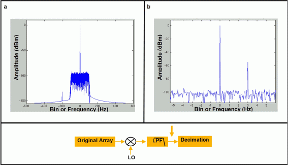
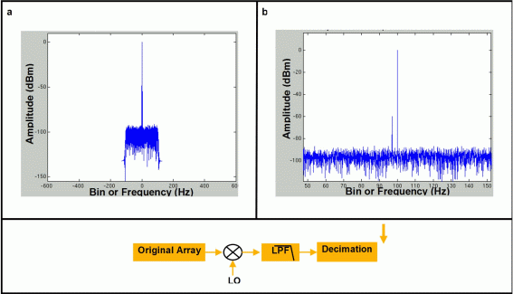
Maximizing Results
Although this sequence of processes on the data array has given us a smaller data array while maintaining the high SNR, there are further steps that could be taken. One of the more typical steps would be to use a higher order filter that would provide a cut-off frequency closer to the center of the spectrum (assuming that it did not cut into the signal spectrum of interest). Since the highest tone that was examined was 3Hz (Tone 2), a filter with up to roughly 5Hz cutoff could be used. On the original 16384 point array, this would allow for decimation of up to a factor of 128 (Figure 15) and a data array size reduction of down to just 128 points.
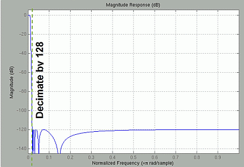
Implementation of Digital Down-Conversion and Decimation in ATE
Implementation of these techniques in ATE follows the block diagram shown in Figure 16. The signal from the DUT is first passed through a low pass filter. The low pass filter prevents any aliasing in the originally sampled array. Only one type of filter is needed for this step as all follow-on manipulations occur in the RTSPU or real time DSP. This kind of architecture allows the ATE designers to implement one very flat and very steep filter to ensure the sampled data quality.
The next step is digitization of the signal. The digitizer is run at maximum speed. This is done to ensure maximum samples in a minimum amount of time. More samples here mean more dynamic range as shown above in the over sampling discussion.
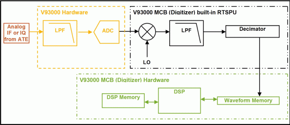
At this point, the Analog signal exists only as an array of numbers. In the function of the RTSPU, it is important to note that no FFTs are needed on the data stream for the digital down conversion and decimation. The only actions that are performed on the data is frequency translation, filtering and flatness correction. The real time DSP needs to multiply by a sinusoid, and then provide a filter and flatness correction. These all occur in the time domain and happen real time.
The down conversion stage takes the signal of interest and translates it to a "virtual" 0Hz. This signal is then filtered and down converted to only include the bandwidth of interest.
After the sampled array has been reduced in size, while maintaining the SNR, the result is put into waveform memory and is available for further DSP manipulations. This is where the FFT and other complex operations will occur.
Conclusion
The techniques outlined here are very useful in an ATE environment, as they show how to maximize signal to noise ratio and minimize the number of points needed for FFT and other manipulations. From a hardware perspective, only one hardware low pass filter is needed and the system could theoretically run the digitizer at its maximum rate at all times. All "fine tuning" steps are done in the RTSPU to condition the data for analysis.
Keep in mind that there are several DSP properties being used together to make this work for practical measurements. Oversampling is used to reduce the noise power per frequency bin. Down conversion is used to center the FFT array at 0Hz. Doing this allows the maximum decimation and therefore reduction of the array size. Of course, an effective digital low pass filter is essential before this decimation step to prevent aliasing terms.
Combining these real time effects in a single IC greatly enhances the effectiveness of a receiver chain, and increases its dynamic range without adding test time to the system. All that is needed is a mental shift about how to look at target spectra. This architecture is the cornerstone of most RF measurements in the V93000.
Acknowledgements
The authors would like to thank the following people for their contributions to this paper. Without their help, this paper would not have been possible.
John McLaughlin, Agilent Technologies
Jeff Brenner, Verigy Ltd.
References
- Mitra, S., "Digital Signal Processing Laboratory Using Matlab," McGraw Hill, 1999.
- Ingle, V.K. and Proakis, J.G., "Digital Signal Processing Using Matlab," Brooks/Cole Publishing, 2000.
- Bracewell, R.N., "The Fourier Transform and Its Applications," Second Edition, McGraw Hill, 1986.
- Ramirez, R.W., "The FFT Fundamentals and Concepts," Prentice Hall PTR, 1985
- Lyons, R.G., "DSP Made Simple," Wireless Symposium/Portable By Design, Chicago, IL Sept. 26-29 2000.
- Oppenheim, A. and Shafer, R., Digital Signal Processing, Englewood Cliffs, NJ, Prentice-Hall, 1975.